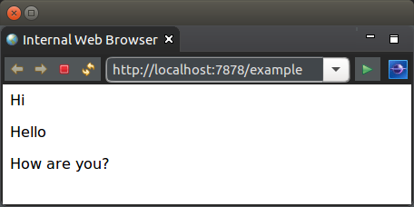

This tutorial demonstrates the segmenting of a template into sections and controlling which sections are rendered.
The example used in this tutorial is the following simple page:
The HTML for the page is as follows:
<html>
<body>
<p>${text}</p>
<!-- {hello} -->
<p>${text}</p>
<!-- {notRender} -->
<p>Not rendered</p>
<!-- {noBean} -->
<p>How are you?</p>
</body>
</html>
The sections are demarcated by the tag: <!-- {section} -->
The section is named as per the name in the tag. The section is from the end of the tag to the next section tag (or the end of the template). Therefore in the above template the hello section is <p>${text}</p>.
Note that the first section is named template by default.
For each section containing a ${bean ...$} or ${property} tag there must be a corresponding method by the naming convention get<SectionName>[Data] (the Data suffix is optional but provided to give better naming to the purpose of the method). This method is responsible for providing a bean that has the necessary properties for rendering the section.
The logic for rendering the template is the following:
public class TemplateLogic {
@Data
public static class Values {
private final String text;
}
@FlowInterface
public static interface Flows {
void noBean();
}
/**
* Obtains the data for the template section.
*
* @return {@link Values}.
*/
public Values getTemplateData() {
return new Values("Hi");
}
/**
* Obtains the data for the hello section.
*
* @return {@link Values}.
*/
public Values getHelloData() {
return new Values("Hello");
}
/**
* Skips not render section.
*
* @param flows
* {@link Flows} which allows rendering control over the sections
* of the template. As this method is called before rendering the
* section it skips rendering to the <code>noBean</code> section.
*/
public void getNotRender(Flows flows) {
flows.noBean();
}
}
The rendering of each section follows the previous tutorials on dynamic content.
The aspect that makes sections useful is the ability to change rendering of the structure of the page. The notRender section is not rendered to the page as its corresponding method invokes the flow to jump to the noBean section.
Please note that any section (even previous sections in the page) may be triggered as the next section. This allows for rendering more complex structures - such as a recursive tree structure.
Controlling section rendering is however expected to only be used seldomly as the ${bean ...$} tag will provide the necessary functionality in the majority of cases.
The next tutorial looks at overriding sections with template inheritance.